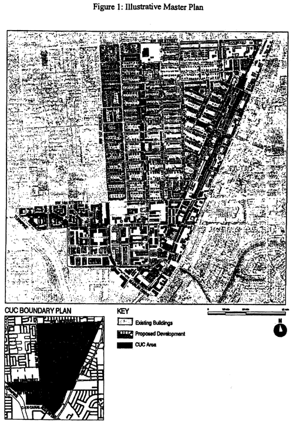
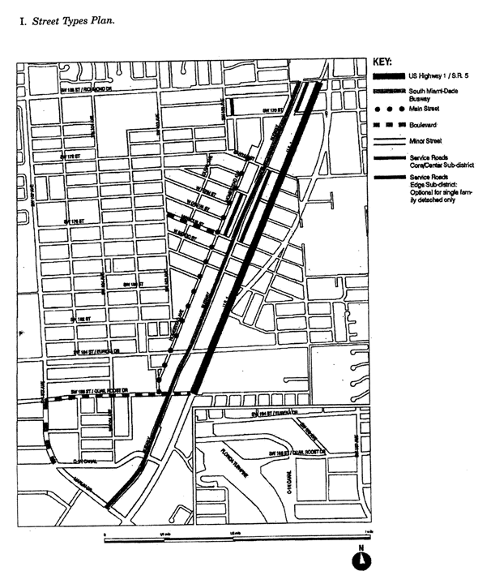
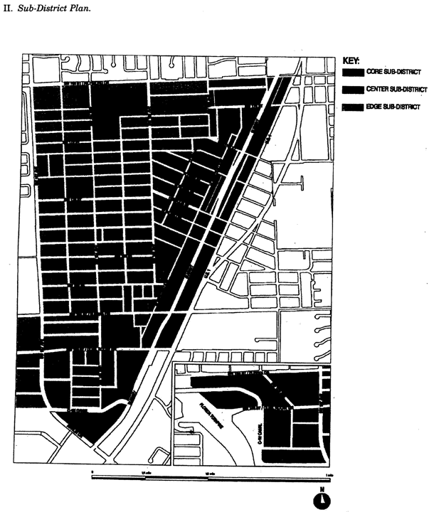
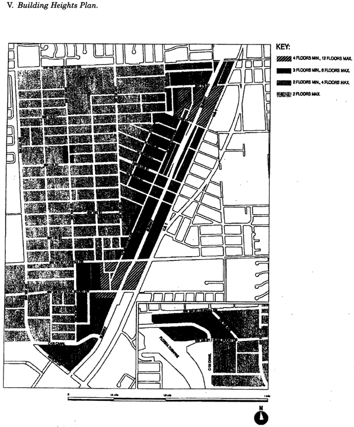
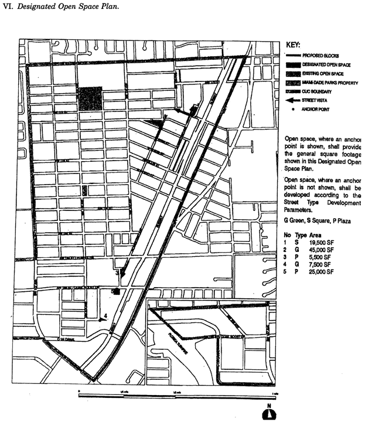
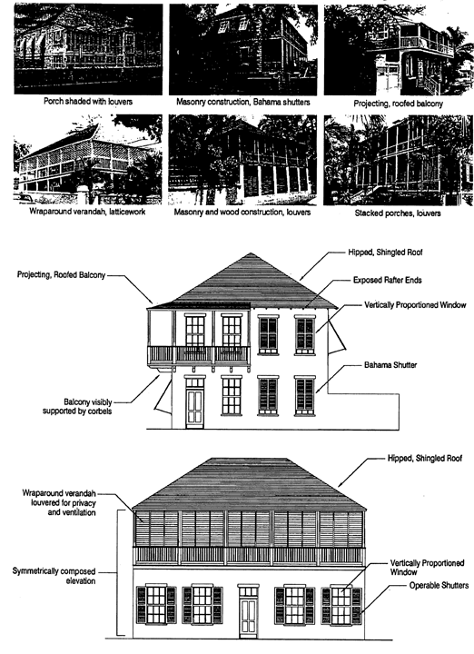

ARTICLE XXXIII(N).
Sec. 33-284.99.6. Purpose, intent and applicability.
Sec. 33-284.99.7. Perrine Community Urban Center (PECUC) District Requirements.
Sec. 33-284.99.9. The Regulating Plans.
Sec. 33-284.99.10. Building Placement and Street Type Development Parameters.
Sec. 33-284.99.11. General Requirements.
Sec. 3-284.99.12. Conflicts with other Chapters and Regulations.
Sec. 33-284.99.13. Non-conforming Structures, Uses, and Occupancies.
Sec. 33-284.99.6.
A.
The regulations contained in this chapter and Chapter 18A, Landscape Code, Code of Miami-Dade County, Florida, shall apply to this article, except as otherwise added to or modified herein.
B.
The Illustrative Master Plan (Figure 1) illustrates the citizens' vision and may be used to interpret this article. Where the Illustrative Master Plan conflicts with the text of this article, the text shall govern.
C.
The boundaries shown in Figure 1 shall constitute the Perrine Community Urban Center (PECUC) Boundary Plan and are generally described as follows: from the intersection of the centerline of the southbound U. S Highway 1 (US 1) and SW 168 Street, then west along the centerline of SW 168 Street to the centerline of SW 107 Avenue, then south along the centerline of SW 107 Avenue to the centerline of SW 184 Street, then west along the centerline of SW 184 Street to the east side of the Homestead Extension of the Florida Turnpike — State Road 821 (HEFT), then south and east along the east side of the HEFT to the centerline of SW 186 Street, Quail Roost Drive, then east along the centerline of SW 186 Street to the east side of the C-1N canal, then south and east along the east and north side of the C-1N canal to the centerline of Marlin Drive, the southeasterly along the centerline of Marlin Drive to the centerline of the South Miami-Dade Busway, then north along the centerline of the South Miami-Dade Busway to SW 186 Street, then east along the centerline of SW 186 Street the centerline of US 1, then north along the center1ine of US 1 to SW 183 Street, then north along the centerline of the southbound US 1 to the point of beginning.
A more detailed legal description of the boundaries follows:
Beginning at the intersection of the centerline of the southbound U.S. Highway 1 (US 1) and the centerline of SW 168 Street, thence West along the aforementioned centerline of SW 168 Street to the intersection with the centerline of SW 107 Avenue, thence South along the aforementioned centerline of SW 107 Avenue to the intersection with the centerline of SW 184 Street, thence West along the centerline of the aforementioned centerline of SW 184 Street to the intersection with the East Right-of-Way line of the Homestead Extension of the Florida Turnpike - State Road 821 (HEFT), thence South and Southeasterly along the afore mentioned East Right-of-Way line of the Homestead Extension of the Florida Turnpike - State Road 821 (HEFT) to the centerline of SW 186 Street (Quail Roost Drive), thence East along the centerline of the aforementioned centerline of SW 186 Street (Quail Roost Drive) to the intersection with the East Right-of-Way line of the C-1N Canal, thence South and East along the afore mentioned East and North Right-of-Way line of the C-1N Canal to the intersection with the centerline of Marlin Drive, thence Southeasterly along the aforementioned centerline of Marlin Drive to the intersection with the centerline of the South Miami-Dade Busway, thence Northeasterly along the aforementioned centerline of the South Miami-Dade Busway to the centerline of SW 186 Street, thence East along the aforementioned centerline of SW 186 Street to the intersection of the centerline of U.S. Highway 1 (US 1), thence Northeasterly along the aforementioned centerline of U.S. Highway 1 (US 1) to the intersection with the extension of the centerline of SW 183 Street, thence Northeasterly along the centerline of the southbound U.S. Highway 1 (US 1) back to the Point of Beginning.
D.
Full scale maps of the Illustrative Master Plan presented in Figure 1, as well as all the Regulating Plans and Street Development Parameters figures in this article, are on file with the Miami-Dade Department of Planning and Zoning.
E.
No provision in this article shall be applicable to any property lying outside the boundaries of the Perrine Community Urban Center District (PECUC) as described herein. No property lying within the boundaries of the PECUC shall be entitled to the uses or subject to the regulations provided in this article until an application for a district boundary change to the PECUC has been heard and approved in accordance with the provisions of this chapter.

Figure 1: Illustrative Master Plan
(Ord. No. 06-127, § 1, 9-12-06)
Sec. 33-284.99.7.
Except as provided herein, all developments within the PECUC shall comply with the requirements provided in Article XXXIII(K), Urban Center District Regulations, of this code.
(Ord. No. 06-127, § 2, 9-12-06)
Except as provided herein, all permitted, conditionally permitted, and temporary uses within the PECUC shall comply with Section 33-284.83 of this code.
A.
Permitted Uses. The following uses shall be permitted.
1.
In the Residential (R) area, all uses provided in Section 33-284.83(A)(1), except that rowhouses shall be permitted only in those areas specifically designated as permitting rowhouses in the Land Use Regulating Plan, as provided in Section 33.284.99.9 of this article.
2.
In the Mixed-Use Corridor (MC) area, all uses provided in Section 33-284.83(A)(3) and the following uses:
(A)
Automobile and truck services and facilities including:
(1)
Open lot car and truck sales new or used, including as ancillary uses, automobile repairs, body and top work and painting, provided that no more than fifteen (15) percent of the gross building area is devoted to such ancillary uses, and subject to the following conditions:
(a)
That attention attractive devices, such as blinking or flashing lights, streamer lights, pennants, banners, streamers and all fluttering, spinning advertising devices (either mobile or stationary) are prohibited.
(b)
That outdoor lighting shall be designed to avoid spilling beyond the site boundaries.
(c)
That no vehicular test drives shall be conducted on residential local traffic streets (fifty-foot right-of-way or less).
(d)
That the applicant obtains a certificate of use, which shall be automatically renewable yearly upon compliance with all terms and conditions.
(e)
All outdoor paging or speaker systems are expressly prohibited.
(2)
Open lot car rental.
(3)
Automobile parts, secondhand from store building only.
(4)
Automobile body and top work and painting.
(B)
Engines, gas, gasoline, steam and oil; sales and service.
(C)
Garage or mechanical service. Including automobile repairs, body and top work and painting. All outdoor paging or speaker systems are expressly prohibited.
(D)
Glass installation.
(E)
Self-service mini-warehouse storage facility in compliance with Section 33-255(23.1) of this code.
(F)
Tire vulcanizing and retreading or sale of use tires.
(G)
Truck storage, only within an enclosed building or an area enclosed by a CBS wall.
(H)
Automobile washing.
3.
Industrial uses. Notwithstanding the provisions of Section 33-284.83(A)(4), only the following uses shall be permitted in the Industrial District (ID) area. These uses shall be allowed in conformance with the Land Use Regulating Plan and the Street Type Development Parameters.
(A)
All uses permitted in the IU-1 zoning district.
(B)
All uses permitted in the IU-2 zoning district after public hearing pursuant to Section 33-311(A)(3) of this code.
(C)
All uses permitted in the Mixed-Use Corridor (MC) on lots located north of SW 184 Street and east of the Busway.
(D)
All uses permitted in the Mixed-Use Optional (MO) on lots located north of SW 184 Street and west of the Busway.
4.
In the Mixed-Use Corridor/Industrial (MCI) area, all uses permitted in the MC and ID areas, as provided in this section. Development in the MCI area shall comply with the Mixed-Use Building or Industrial Building placement standards provided in Section 33-284.85. Notwithstanding any other provisions to the contrary, Industrial uses in the MCL area shall be exempt from minimum height and density requirements.
(Ord. No. 06-127, § 1, 9-12-06; Ord. No. 07-97, § 1, 7-10-07; Ord. No. 11-30, § 1, 5-3-11)
Sec. 33-284.99.9.
I.
Street Types Plan.

Street Types Plan
II.
Sub-District Plan.

Sub-District Plan
III.
Land Use Plan.
IV.
Density Plan.
V.
Building Heights Plan.

Building Heights Plan
VI.
Designated Open Space Plan.

Designated Open Space Plan
VII.
New Street Dedications Plan.
VIII.
Bike Route Plan.
(Ord. No. 06-127, § 4, 9-12-06; Ord. No. 07-97, § 2, 7-10-07; Ord. No. 11-30, § 2, 5-3-11)
Sec. 33-284.99.10.
A.
All new development and redevelopment within the PECUC shall comply with the Building Placement and Design Parameters as provided in this section and in Section 33-284.85 of this code.
B.
All new development and redevelopment within the PECUC shall comply with the Street Type Parameters as provided herein:
| Street Type | Minimum Required Configuration | |
| Core/Center | Edge | |
| U.S. 1 | As provided in this section | |
| Main Street | As provided in this section | |
| Boulevard | Street type 1, parking both sides | Street type 1 or 2 |
| Minor Street | Street type 4, parking one side | Street type 4 or 5 |
| Service Road | As provided in Section 33-284.85 | |
| Pedestrian Passage | As provided in Section 33-284.85 | |
Unless otherwise provided by the Building Placement and Design Parameters in Section 33-284.85 of this code, the following front and side street setbacks shall be required within the PECUC:
| Frontage Table |
|||
| Street Type | Required Setback | ||
| Core | Center | Edge | |
| U.S. 1 | 6 feet | 6 feet | 10 feet |
| Main Street | 10 feet | 10 feet | 10 feet |
| Boulevard | 0 feet | 6 feet | 10 feet |
| Minor Street | 10 feet | 6 feet | 10 feet |
| Service Road | 0 feet | 0 feet | 0 feet |
| Pedestrian Passage | 0 feet | 0 feet | 10 or 15 feet |

Building Placement: Edge

Street Section: U.S. 1/S.R. 5

Street Section: Homestead Ave./Main St.
(Ord. No. 06-127, § 5, 9-12-06)
Sec. 33-284.99.11.
A.
Lots and Blocks. In addition to the minimum lot requirements in Section 33-284.86(A), the following shall be permitted in areas designated Residential (R) areas south of SW 170 Street:
| Minimum Lot Requirements | ||
| Size (Square Feet) |
Frontage (Feet) |
|
| Single-family detached | 3,750 | 37.5 |
B.
Architectural Guidelines. To retain the character of the initial development of Perrine and to recognize the heritage of the early and current residents of the area, architectural elements typical of the Caribbean and the Southern United States as provided in this section shall be required.
1.
Architectural elements. New development within the Perrine Community Urban Center District shall, to the greatest extent practicable, utilize the following architectural elements illustrated herein:
a.
Projecting, roofed balconies
b.
Continuous, wraparound verandahs
c.
Vertically proportioned door and window openings
d.
Hip roofs, finished with wood-shingles, flat concrete tile, or metal standing seam
e.
Wood and masonry construction
f.
Shading devices such as Bahama shutters, louvers, latticework, and projecting roof eaves

Architectural Elements
2.
Architectural elements shall be required as follows:
| Sub-Districts/ Land Use Areas |
Required Elements | |
| All | Vertically proportioned door and window openings, exterior walls finished with smooth stucco or wood siding. | |
| Center and Edge Sub-Districts, in all land use areas except Industrial (ID) | Two or more elements required on the building elevation facing the front property line | Projecting balconies on the second story or above visibly supported by brackets or corbels, minimum of 4 ft. deep, extending across a minimum of 35% of the elevation; roofed balconies may not be enclosed except by louvers, shutters, or screening. |
| Recessed verandahs on any story, minimum of 8 ft. deep extending across a minimum of 50% of the elevation; verandahs may not be enclosed except by louvers, shutters, or screening. | ||
| Projecting porch on the ground story, minimum of 8 ft. deep extending across a minimum of 50% of the elevation; porches may not be enclosed except by louvers, shutters, or screening. | ||
| For sloped roofs not concealed by a parapet, roof eaves with rafter ends exposed. | ||
| Core and Center | Where arched openings are provided, such openings shall be round-headed or three-centered and shall spring from columns or piers; such openings shall not appear to be punched through the wall. | |
3.
Prohibited elements. Arched, circular, and double-height openings are not permitted in areas designated Residential (R) and Residential Modified (RM) land use areas.
(Ord. No. 06-127, § 6, 9-12-06)
Sec. 3-284.99.12.
This article shall govern in the event of conflicts with other zoning, subdivision, or landscape regulations of this code, or with the Miami-Dade Department of Public Works Manual of Public Works.
(Ord. No. 06-127, § 7, 9-12-06)
Sec. 33-284.99.13.
Nothing contained in this article shall be deemed or construed to prohibit a continuation of a legal nonconforming structure, use, or occupancy in the PECUC that either (1) was existing as of the date of the district boundary change on the property to PECUC or (2) on or before said date, had received final site plan approved through a public hearing pursuant to this chapter or through administrative site plan review or had a valid building permit. However, any structure, use, or occupancy in the PECUC that is discontinued for a period of at least six (6) months, or is superseded by .a lawful structure, use, or occupancy permitted under this chapter, or that incurs damage to the roof or structure to an extent of fifty (50) percent or more of its market value, shall be subject to Section 33-35(c) of this code. However, a lawfully existing single-family home use that is discontinued for a period of at least six months or that incurs damage to the roof or structure to an extent of fifty (50) percent or more of its market value, shall not be subject to Section 33-35(c) of this code.
(Ord. No. 06-127, § 8, 9-12-06)